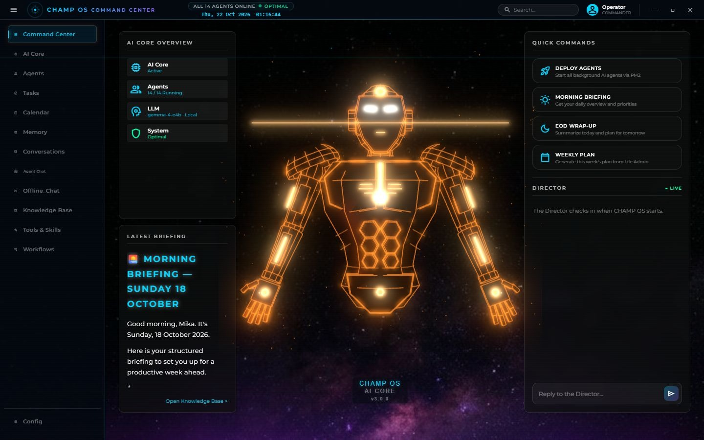
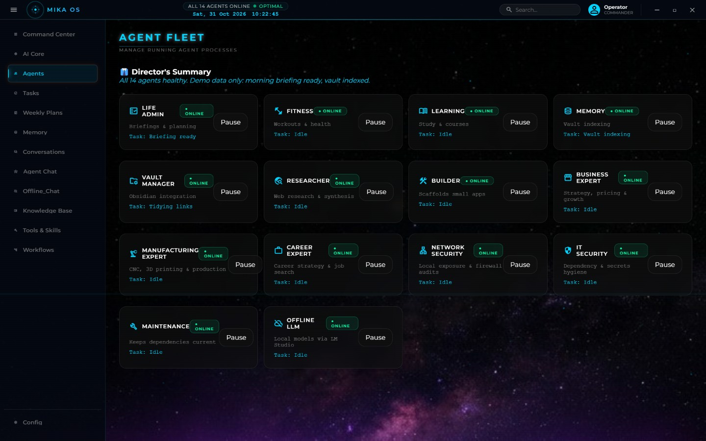

Case study · Multi-agent system · 2026
CHAMP OS: a multi-agent system with human approval gates
In progressSecurity hardening in review
A multi-agent system: a lead agent orchestrates 33 specialist role agents (Claude Code, Gemini via Antigravity) through a markdown task queue with locks, human approval gates and review/security gates. A separate always-on fleet of 13 agents runs the day-to-day under PM2, with an Electron desktop app as the control surface and a folder of plain markdown files as the shared memory. This page shows how it is wired, where the data goes, and which safety work is done and which is still planned.

01 · Brief
What it is for, and what I built
I wanted one place to hand work to AI agents and keep my notes, with every task tracked, reviewed and approved by me, instead of a pile of separate dashboards and chats.
I designed the architecture and built the system: the agent fleet, the desktop app and the vault layout.
A lead agent that hands tasks from a markdown queue to 33 specialist role agents, with lock files, leases, review and security gates, and my approval before anything ships. Alongside it, an always-on PM2 fleet: an orchestrator that routes requests and runs a “Director” check-in loop, 13 agents and a local-model service. There is also an Electron app with an Agent Chat page and a 3D graph of the vault.
Runs on my Windows PC. Next steps: apply the security hardening that is in review, then replace the always-on fleet with one orchestrator and short-lived role agents.
02 · Architecture
The always-on fleet: an orchestrator, 13 agents and a markdown vault
The desktop app never runs agent logic itself. Its main process starts the fleet with pm2 start and talks to the services over HTTP on the same PC. Every service writes its results into the vault through one shared module. Models are called through another shared module: it can use a local model and falls back to Gemini; the Researcher and the app chat page call Anthropic.
Diagram is wide: scroll it sideways, or open it full size to zoom. Open full size

Source: agents/ecosystem.config.cjs (the fleet: 1 orchestrator + 13 agents, plus an optional local-model service), agents/shared/llm.js, agents/shared/obsidian.js and app/main.js.
What each service does
| Service | Job (from its code) |
|---|---|
| orchestrator | An LLM classifies each request and forwards it to one of 12 agents. The Director checks agent states every 30 s and can pause or resume an agent. It posts check-ins and status remarks into Agent Chat. |
| life-admin | Morning briefing 07:00, end-of-day wrap 18:00, weekly plan Mondays 08:00 |
| fitness | Daily fitness note at 06:00 |
| learning | Evening study plan at 20:00 |
| memory | Summarises notes into Notes/Memory Index.md |
| vault-manager | Watches a “raw files” drop folder (processing is a stub) |
| researcher | Web research through Claude's web search tool; saves the answer and sources |
| builder | Generates project files into its own output folder; never runs or installs anything |
| business-, manufacturing-, career-expert | Advice agents with their own system prompts |
| network-security | Daily 04:00: checks the agent services are reachable from this PC only and reads the firewall state |
| it-security | Daily 04:15: npm audit and checks that .env is git-ignored; reports only |
| maintenance | Sundays 05:00: npm outdated report. npm update runs only when called directly for one named project |
| offline-llm | Optional bridge to a local model: LM Studio, or a standalone llama-server for a GGUF file |
03 · Data flow
Where data comes from, where it goes, where it is kept
Everything is stored as markdown in the vault on the local disk; there is no database. Data leaves the PC in four cases. The shared model caller falls back to Gemini when LM Studio is not reachable. The Researcher agent and the app's chat page use the Anthropic API. The IT-security and maintenance agents contact the npm registry. The desktop app loads its fonts from Google Fonts.
Diagram is wide: scroll it sideways, or open it full size to zoom. Open full size

Source: agents/shared/llm.js (local first, Gemini fallback, LLM_PROVIDER), agents/researcher/index.js, the ai:chat handler in app/main.js, each agent's scheduleJob and writeNote calls.
04 · Workflow
One task, start to finish, with the approval step
This is the Director flow in the orchestrator. When the app starts, the Director writes a check-in from facts it gathers (fleet state, recent vault changes, the latest briefing) and may offer to run a job. A job runs only if I reply in Agent Chat and agree. The job must also be one of 8 fixed actions in the code; anything else is ignored.
Diagram is wide: scroll it sideways, or open it full size to zoom. Open full size

The approval step has two parts. A model reads my reply and decides whether I agreed, which is a soft check. Then plain code accepts only the 8 listed actions, such as the morning briefing or a security audit; that is the hard limit. Nothing on the list deletes files, installs packages or pushes code. The Builder only writes files and never runs them, and npm update is not on the Director's list.
Source: DIRECTOR_ACTIONS, handleDirectorAnswer and runDirectorAction in agents/orchestrator/index.js; announceSession in app/main.js.
05 · Security and privacy
What is true today, and what is planned
This describes the code as it runs now. Hardening that is written and tested but not yet switched on is marked as planned.
Today
- TodayLocal-only services. The agent services can only be reached from this PC, and the network-security agent checks that every night.
- TodayWhat goes to the cloud. If LM Studio is down, the shared caller sends that prompt to Google Gemini; prompts can include vault context such as tasks and notes. Setting
LLM_PROVIDER=localturns the fallback off. The Researcher agent and the app's chat page always send their prompts to Anthropic. The IT-security and maintenance agents contact the npm registry, and the desktop app loads its fonts from Google Fonts. Those are the outside calls in the current code. - TodayWhere data lives. In the vault: plain markdown on the local disk. Agent state, briefings, research, chat transcripts and PM2 logs are all files there. There is no database and no sync service in the code.
- TodaySecrets. API keys live in
.envfiles that are git-ignored in bothagents/andapp/. The IT-security agent checks that nightly. The app's Anthropic key is read in the Electron main process, not in the page. - TodayDesktop app boundary.
contextIsolation: trueandnodeIntegration: false. The page reaches files and the system only through the functions the preload script exposes. - TodayApproval gates. The Director runs only the 8 listed actions, and only after my reply. The Builder writes files into its own folder with a path-escape check and never executes them. IT security only reports. Maintenance only reports on its schedule; it runs
npm updateonly when called for one named project.
Planned
Further hardening for the agent services and the desktop app is built, tested and in review.
06 · Stack, numbers, limits, next
The facts, with sources
Stack
Claude Code and Gemini (via Antigravity) for the lead and role agents, the Anthropic API for research and the app chat page, and the Gemini API as the fleet's fallback. Node.js with Express for each service, PM2 to run and restart them, node-schedule for timed jobs, an Electron 31 desktop app (Windows build target), Three.js for the 3D vault graph, and an Obsidian vault of markdown files. Optional: LM Studio and llama.cpp for local models.
Results
- How models are called: the fleet's shared caller can run on a local model and falls back to Gemini; the Researcher and the app chat page call Anthropic.
- Tasks and their locks are plain markdown files. Shared helpers claim a task with an atomic lock file and a 30-minute lease. A stale lease can be taken over after a 10-minute grace period. All 18 tests pass.
- The fleet watches itself: nightly exposure and dependency audits write reports into the vault.
Limitations
- The always-on fleet costs memory, even when idle.
- The task-lock helpers are tested but not yet called by the PM2 agents themselves.
- It is a single-user desktop tool: no login, no multi-user data, and some agents are Windows-specific (firewall check, notifications).
- It does not train models; it orchestrates existing open-weights and cloud models.
What's next
- Apply the two hardening changes once they pass review.
- Replace the always-on fleet with one orchestrator and on-demand role agents that claim a task, write their result and stop.
- Publish a cleaned README and architecture diagram in the public repository.
